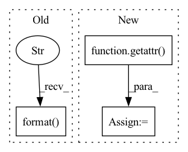

Pattern ID :20403
Before Change
weight_keys.append(key_name1)
weight_keys.append(key_name2)
key_name1 = "bias_ih_l{layer_idx}{suffix}".format(layer_idx=layer, suffix=suffix)
key_name2 = "bias_hh_l{layer_idx}{suffix}".format(layer_idx=layer, suffix=suffix)
bias_keys.append(key_name1)
bias_keys.append(key_name2)
x = torch.randn(seq_len, batch, input_size)After Change
if wn.startswith("weight"):
weight = self._quant_dequant_weight(getattr(fp32_rnn, wn), weight_qparams)
else:
weight = getattr( fp32_rnn, wn)
flat_weights.append(weight)
fp32_rnn._flat_weights = flat_weights
fp32_res = fp32_rnn(x, (h, c))In pattern: SUPERPATTERN
Frequency: 4
Non-data size: 3
Instances Fragment ID: 66054895
Project Name: pytorch/pytorch
Commit Name: 7ddf212f3390f14abdbd5373f5fbdb04ffde5fd8
Time: 2022-03-11
Author: jerryzh@fb.com
File Name: test/quantization/core/test_quantized_module.py
M Class Name: TestReferenceQuantizedModule
N Class Name: TestReferenceQuantizedModule
M Method Name: test_rnn(1)
N Method Name: test_rnn(1)
M Parent Class: QuantizationTestCase
N Parent Class: QuantizationTestCase
M File Name: test/quantization/core/test_quantized_module.py
N File Name: test/quantization/core/test_quantized_module.py
M Start Line: 1546
M End Line: 1595
N Start Line: 1552
N End Line: 1590
Before Change
elif self.config["feature_extractor"] == "EdgeConvFeatures":
self.feature_extractor = blocks.EdgeConvFeatures(self.config["pattern_encoding_size"])
else:
raise ValueError("GarmentPattern3D::Error::Unsupported feature extractor {} requested in config".format( self.config["feature_extractor"]) )
// Decode into pattern definitionAfter Change
self.loop_loss = metrics.PanelLoopLoss(data_stats=data_norm)
// Feature extractor definition
feature_extractor_module = getattr( blocks, self.config["feature_extractor"])
self.feature_extractor = feature_extractor_module(self.config["pattern_encoding_size"], self.config)
if hasattr(self.feature_extractor, "config"):
self.config.update(self.feature_extractor.config) // save extractor"s additional configuration
Fragment ID: 66054911
Project Name: maria-korosteleva/garment-pattern-estimation
Commit Name: fd5c692b41060b14597a002bbdb644aa33c2c7f4
Time: 2020-09-17
Author: mariako@kaist.ac.kr
File Name: nn/nets.py
M Class Name: GarmentPattern3D
N Class Name: GarmentPattern3D
M Method Name: __init__(6)
N Method Name: __init__(6)
M Parent Class: BaseModule
N Parent Class: BaseModule
M File Name: nn/nets.py
N File Name: nn/nets.py
M Start Line: 290
M End Line: 299
N Start Line: 290
N End Line: 297
Before Change
if self.torch_dataset.mask is not None:
train_mask = self.torch_dataset.mask[self.train_slice]
scaler = scaler.fit(train, mask=train_mask, keepdims=True)
tsl.logger.info("Fit and set scaler for {}: {}".format( k, scaler) )
self.torch_dataset.add_scaler(k, scaler)
def get_dataloader(self, split: Literal["train", "val", "test"] = None,After Change
f"key "{key}".")
// fit scalers before training
if stage == "fit":
data = getattr( self.torch_dataset, key)
// get only training slice
if "t" in self.torch_dataset.patterns[key]:
data = data[self.train_slice]
Fragment ID: 66054899
Project Name: torchspatiotemporal/tsl
Commit Name: e9fc1fe99957129056ce81249e6a26c74ee3ef58
Time: 2022-11-16
Author: ivan.marisca@hotmail.it
File Name: tsl/data/datamodule/spatiotemporal_datamodule.py
M Class Name: SpatioTemporalDataModule
N Class Name: SpatioTemporalDataModule
M Method Name: setup(2)
N Method Name: setup(2)
M Parent Class: LightningDataModule
N Parent Class: LightningDataModule
M File Name: tsl/data/datamodule/spatiotemporal_datamodule.py
N File Name: tsl/data/datamodule/spatiotemporal_datamodule.py
M Start Line: 141
M End Line: 156
N Start Line: 147
N End Line: 175
Before Change
custom_init=self.config["lstm_init"]
)
else:
raise ValueError("GarmentPattern3D::Error::Unsupported decoder {} requested in config".format( self.config["decoder"]) )
def forward(self, positions_batch):
self.device = positions_batch.deviceAfter Change
// Decode into pattern definition
panel_decoder_module = getattr( blocks, self.config["panel_decoder"])
self.panel_decoder = panel_decoder_module(
self.config["panel_encoding_size"], self.config["panel_encoding_size"], panel_elem_len, self.config["panel_n_layers"],
dropout=self.config["dropout"],
custom_init=self.config["lstm_init"] Fragment ID: 66054897
Project Name: maria-korosteleva/garment-pattern-estimation
Commit Name: 8cc214ce09e45b980511ffee436a6d8a9da8604c
Time: 2020-09-16
Author: mariako@kaist.ac.kr
File Name: nn/nets.py
M Class Name: GarmentPattern3D
N Class Name: GarmentPattern3D
M Method Name: __init__(6)
N Method Name: __init__(6)
M Parent Class: BaseModule
N Parent Class: BaseModule
M File Name: nn/nets.py
N File Name: nn/nets.py
M Start Line: 295
M End Line: 309
N Start Line: 299
N End Line: 310